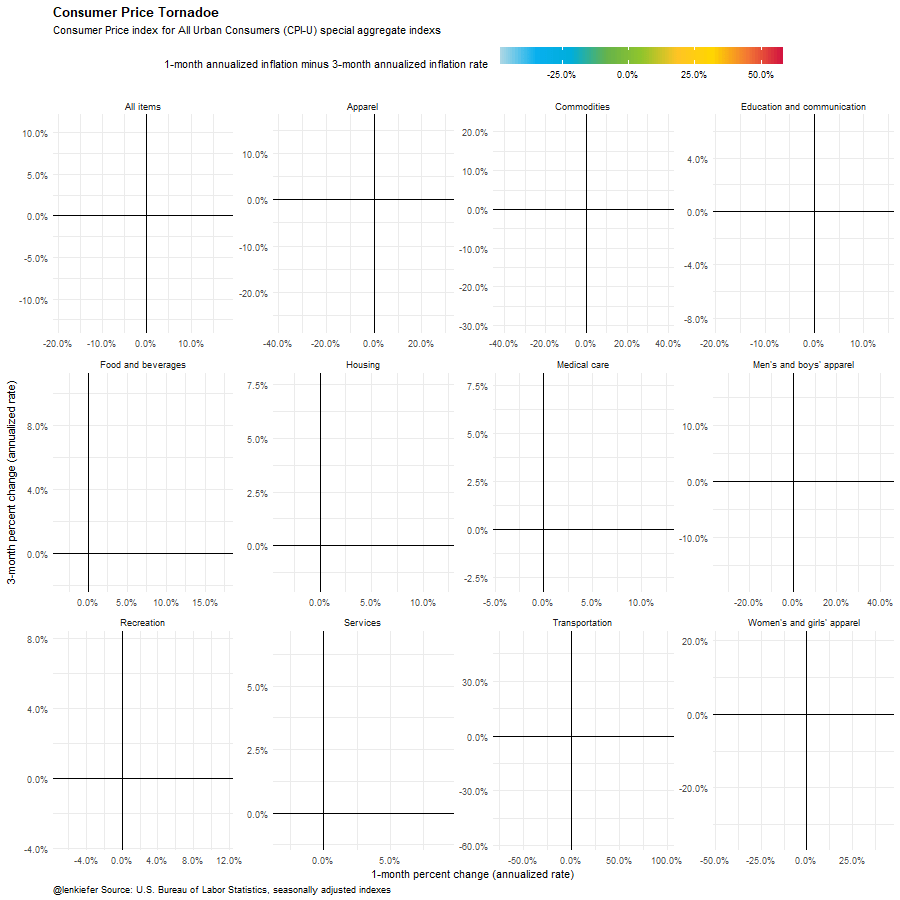

Earlier this week, I made a boss chart:
https://t.co/6wf40jtqHI pic.twitter.com/xlv3Uzpiv0
— üìà ùôªùöéùöó ùô∫ùöíùöéùöèùöéùöõ üìä (@lenkiefer) May 12, 2020
While listening to Chart Chat I heard Jeffrey Shaffer, Steve Wexler, Amanda Makulec, and Andy Cotgreave discuss tornado charts. I decided it might be a good idea to make one. Because I’m not sure I can trust with the awesome power inherent in these charts I won’t post R code here.
Here is the original
inflation tornado pic.twitter.com/TYY9CFprTh
— üìà ùôªùöéùöó ùô∫ùöíùöéùöèùöéùöõ üìä (@lenkiefer) May 12, 2020
If one is so good, then more ought to be better.

We can also really up the pizzazz factor.

Salvage
Is the tornado plot even worth trying to salvage?
I think so, though in best of worlds this type of viz is probably a very special case
There may be better ways to show it, but it does make clear the big difference between April 2020 and every other month since 1998 (inflation collapses). See the static version with a tile plot to help you decode the time series and the colors.
My thirty favorite custom Emacs keybindings
Now let’s discuss my thirty favorite custom Emacs keybindings…
Okay, now that they’re gone, here’s the R code for the Tornado plot. Use it wisely.
# set libraries
library(scales)
library(data.table)
library(tidyverse)
library(lubridate)
library(data.table)
library(gganimate)
# get cpi data from BLS
dt<-
# data
fread('http://download.bls.gov/pub/time.series/cu/cu.data.2.Summaries') %>%
#series ids
left_join(fread("http://download.bls.gov/pub/time.series/cu/cu.series"), by="series_id") %>%
# series names
left_join(fread("http://download.bls.gov/pub/time.series/cu/cu.item"),by="item_code") %>%
# filter on year
filter(year>2000,area_code=="0000", seasonal=="S") %>%
group_by(series_id)%>%
mutate(y=100*value/value[year==2001 & period=="M01"],
date=as.Date(ISOdate(year,as.numeric(substr(period,2,3)),1) ) ) %>%
ungroup()
# mini tornados
# create monthly and 3-month percent changes in the CPI
dt<-
data.table(dt)[order(series_id,date)][, ":="(qoq=(value/shift(value,3))**4 - 1,
mom=(value/shift(value,1))**12-1),
by=.(series_id,item_name)]
a2 <-
ggplot(data=dt[item_name !="Other goods and services",], aes(x=mom,y=qoq,color=mom-qoq))+
geom_path(size=1.05,alpha=0.7)+
facet_wrap(~item_name,scales="free")+
# color function down below
scale_color_mycol(discrete=FALSE,palette = "cool2hot",
label=scales::percent_format(accuracy=0.1),
name="1-month annualized inflation minus 3-month annualized inflation rate ")+
geom_point(size=6,alpha=0.8)+
theme_minimal()+
scale_x_continuous(label=percent_format(accuracy=0.1))+
scale_y_continuous(label=percent_format(accuracy=0.1))+
geom_text(aes(label=format(date,"%b %Y")),size=4,fontface="bold",hjust=0)+
geom_hline(yintercept=0,color="black")+
geom_vline(xintercept=0,color="black")+
labs(caption="@lenkiefer Source: U.S. Bureau of Labor Statistics, seasonally adjusted indexes",
title="Consumer Price Tornadoe",
subtitle="Consumer Price index for All Urban Consumers (CPI-U) special aggregate indexes",
y="3-month percent change (annualized rate)",
x="1-month percent change (annualized rate)")+
theme(plot.title=element_text(face="bold"),
legend.key.width=unit(2,"cm"),
legend.position="top",
plot.caption=element_text(hjust=0))
animate(a2+ transition_reveal(date),end_pause=20, width=900,height=900)
# set mydir to a palce to save plots
save_animation(last_animation(), file=paste0(mydir,"CPI_tornado.gif"))
# use view_follow() for shaky camera
animate(a2+ transition_reveal(date)+view_follow(),end_pause=20, width=900,height=900)
save_animation(last_animation(), file=paste0(mydir,"CPI_tornado2.gif"))
# a color function for rainbow palette
# Function for colors ----
# adapted from https://drsimonj.svbtle.com/creating-corporate-colour-palettes-for-ggplot2
#####################################################################################
## Make Color Scale ---- ##
#####################################################################################
my_colors <- c(
"green" = rgb(103,180,75, maxColorValue = 256),
"green2" = rgb(147,198,44, maxColorValue = 256),
"lightblue" = rgb(9, 177,240, maxColorValue = 256),
"lightblue2" = rgb(173,216,230, maxColorValue = 256),
'blue' = "#00aedb",
'red' = "#d11141",
'orange' = "#f37735",
'yellow' = "#ffc425",
'gold' = "#FFD700",
'light grey' = "#cccccc",
'purple' = "#551A8B",
'dark grey' = "#8c8c8c")
my_cols <- function(...) {
cols <- c(...)
if (is.null(cols))
return (my_colors)
my_colors[cols]
}
my_palettes <- list(
`main` = my_cols("blue", "green", "yellow"),
`cool` = my_cols("blue", "green"),
`cool2hot` = my_cols("lightblue2","lightblue", "blue","green", "green2","yellow","gold", "orange", "red"),
`hot` = my_cols("yellow", "orange", "red"),
`mixed` = my_cols("lightblue", "green", "yellow", "orange", "red"),
`mixed2` = my_cols("lightblue2","lightblue", "green", "green2","yellow","gold", "orange", "red"),
`mixed3` = my_cols("lightblue2","lightblue", "green", "yellow","gold", "orange", "red"),
`mixed4` = my_cols("lightblue2","lightblue", "green", "green2","yellow","gold", "orange", "red","purple"),
`mixed5` = my_cols("lightblue","green", "green2","yellow","gold", "orange", "red","purple","blue"),
`mixed6` = my_cols("green", "gold", "orange", "red","purple","blue"),
`grey` = my_cols("light grey", "dark grey")
)
my_pal <- function(palette = "main", reverse = FALSE, ...) {
pal <- my_palettes[[palette]]
if (reverse) pal <- rev(pal)
colorRampPalette(pal, ...)
}
scale_color_mycol <- function(palette = "main", discrete = TRUE, reverse = FALSE, ...) {
pal <- my_pal(palette = palette, reverse = reverse)
if (discrete) {
discrete_scale("colour", paste0("my_", palette), palette = pal, ...)
} else {
scale_color_gradientn(colours = pal(256), ...)
}
}
scale_fill_mycol <- function(palette = "main", discrete = TRUE, reverse = FALSE, ...) {
pal <- my_pal(palette = palette, reverse = reverse)
if (discrete) {
discrete_scale("fill", paste0("my_", palette), palette = pal, ...)
} else {
scale_fill_gradientn(colours = pal(256), ...)
}
}